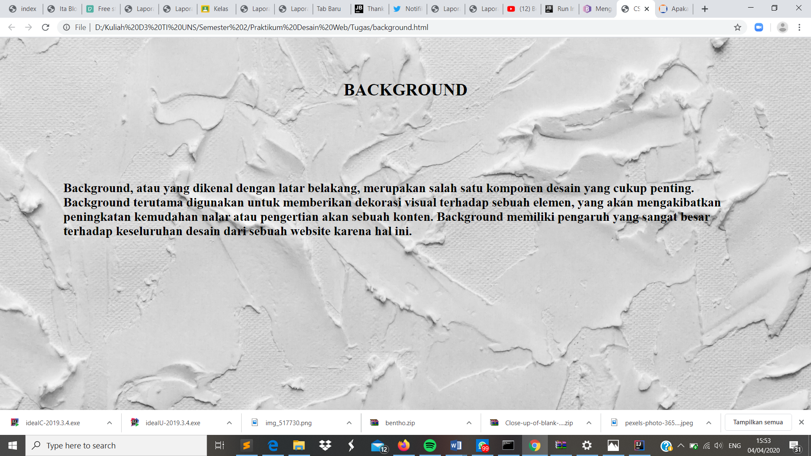

Background
Pendahuluan
Background atau lebih dikenal dengan latar belakang, merupakan salah satu komponen desain yang cukup penting. Background digunakan terutama untuk memberikan dekorasi berupa visual terhadap sebuah elemen, yang nantinya akan ditujukan untuk meningkatkan kemudahan dalam memahami atau menalar dari sebuah konten. Background memiliki pengaruh yang sangat besar terhadap keseluruhan desain salah satunya digunakan sebagai tampilan dari sebuah website..
Codingan
Kode CSS Internal
Hasil Screenshot
Analisis
Pada percobaan membuat background kali ini saya menggambil gambar sebagai background yang telah saya simpan dalam folder img. Selain itu background juga dapat ditentukan ukurannya dengan properti background-size dengan posisi center(tengah)